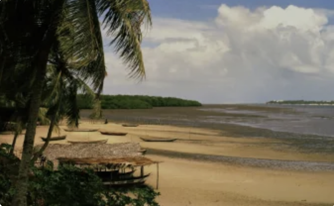
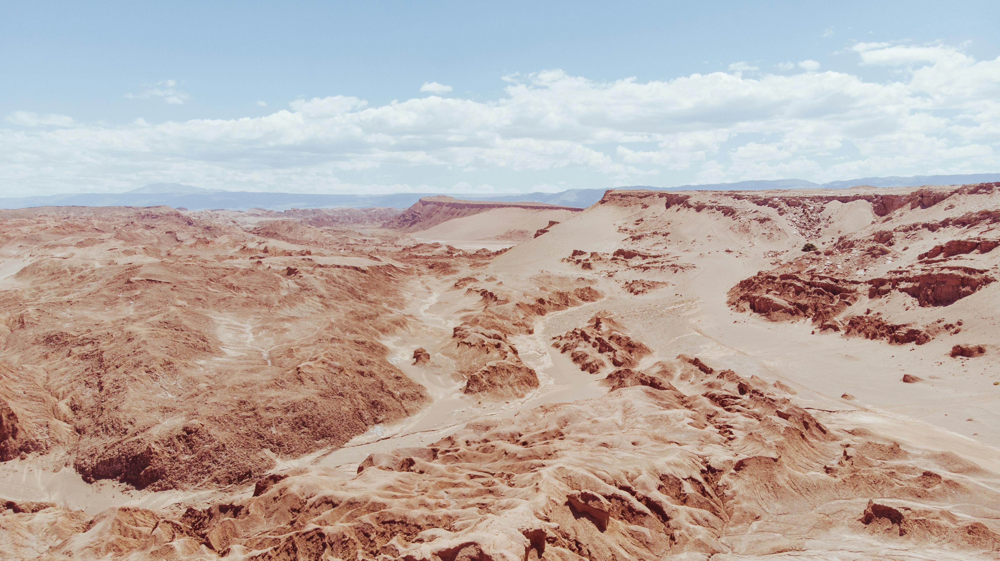
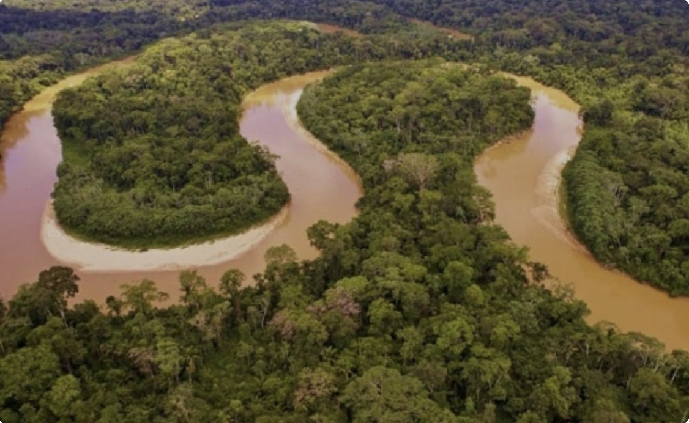
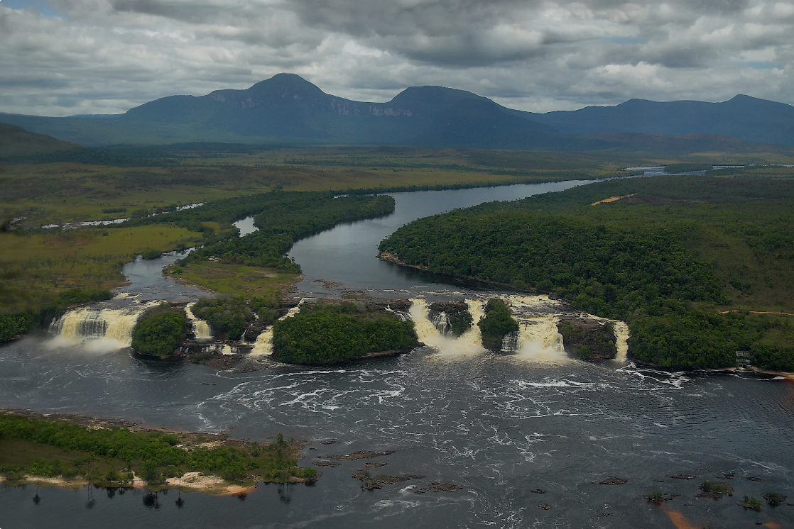
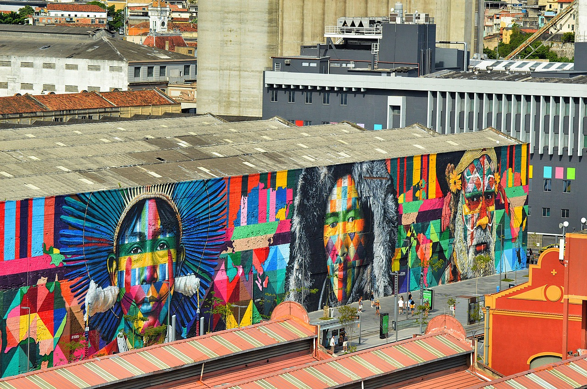
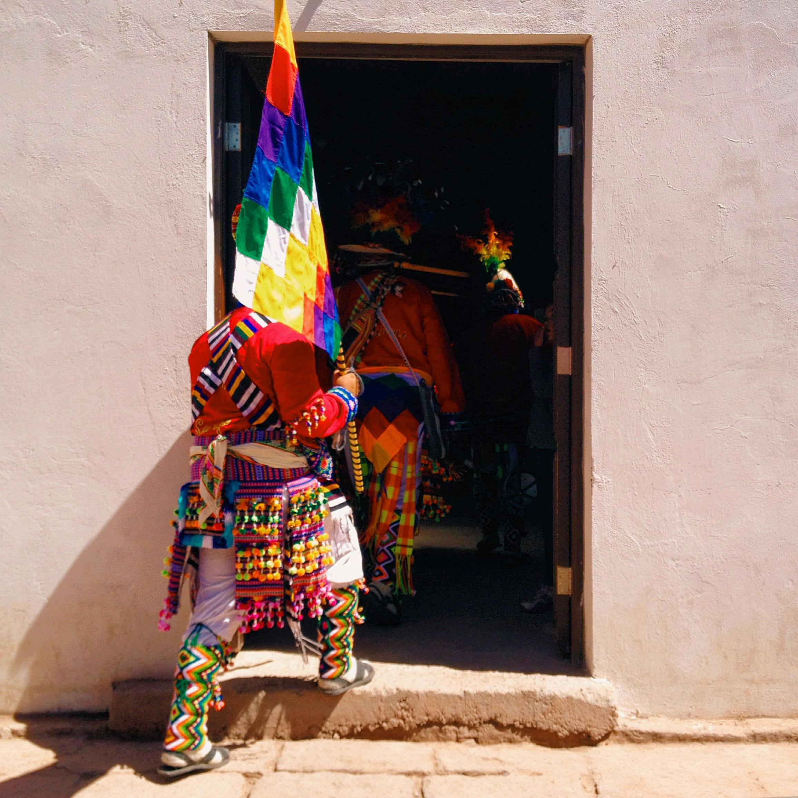

South America
Geography
South America, the fourth-largest continent, stretches from the Gulf of Darién in the northwest to Tierra del Fuego in the south. Its geography is divided into three main regions: mountains and highlands, river basins, and coastal plains. These diverse regions support a range of biomes, from alpine tundras and rainforests to dry deserts and fertile grasslands, contributing to the continent's unparalleled biodiversity.
Andes Mountains and Highlands
The Andes, the world’s longest mountain range, span 8,850 kilometers (5,500 miles) along the continent's western edge. Peaks like Aconcagua, the tallest outside Asia at 6,962 meters (22,841 feet), tower over alpine biomes. Highlands like the altiplano in Peru and Bolivia and the Patagonian plateaus in Argentina and Chile add to the diverse landscapes. Unique plants like the Queen of the Andes and hardy alpine vegetation thrive in these environments. Beyond the Andes, the Brazilian and Guiana Highlands feature forested plateaus that support vibrant ecosystems.

Coastal Plains
South America’s coastal plains vary greatly by location. Northeastern Coast (Brazil): Dry plains where the Brazilian Highlands block moist winds.
Western Coast (Peru and Chile): Extremely dry plains shaped by the Peru Current and Andes Mountains, including the Atacama Desert, the driest place on Earth. This area supports minimal flora and fauna, but rich copper deposits fuel the Chilean economy.
River Basins
South America’s major river basins—Amazon, Orinoco, and Paraguay/Paraná—define much of its geography. Amazon River Basin: The world’s largest watershed spans 7 million square kilometers (2.7 million square miles) and supports the Amazon rainforest, a tropical biome teeming with diverse flora (rubber trees, lianas) and fauna (macaws, sloths, and howler monkeys).
Orinoco River Basin: Encompassing much of Venezuela and parts of Colombia, this basin includes the Llanos savanna biome, home to grasslands and species like the Orinoco crocodile and scarlet ibis.
Paraguay/Paraná Basin: Covering parts of Brazil, Bolivia, Paraguay, and Argentina, this basin feeds the fertile Pampas grasslands, key for agriculture and grazing. Iconic features include Iguazu Falls and the populous Rio de la Plata estuary.

Biodiversity
South America is one of the most ecologically diverse continents on Earth, renowned for its unparalleled biodiversity and unique ecosystems. The Amazon Rainforest, often called the "lungs of the planet," is the largest tropical forest in the world, hosting millions of species, many of which are found nowhere else. Iconic wildlife like jaguars, anacondas, and capybaras thrive in this vibrant biome, alongside a dazzling array of plants such as bromeliads, orchids, and the economically significant rubber trees.
Click the image below to reveal a fun fact:
Ecosystems
The continent's major ecosystems are as varied as its landscapes. The towering Andes Mountains provide a high-altitude habitat for species like llamas, condors, and hardy plants adapted to thin air and cooler climates.
In stark contrast, the Pampas grasslands stretch across Argentina and Uruguay, offering fertile grounds that support species like armadillos and deer. South America is also home to the Pantanal, the largest tropical wetland in the world, which serves as a haven for aquatic life, giant otters, and colorful macaws.
Conservation
Conservation in South America faces significant challenges, particularly the ongoing deforestation of the Amazon Rainforest, which threatens global biodiversity and accelerates climate change. Efforts are underway to combat habitat loss and preserve native species through reforestation projects, wildlife protection laws, and sustainable land management practices. These initiatives are vital to safeguarding South America's ecological treasures for future generations.
South America's Culture
South America contains a rich and diverse culture set that stems from pre-Colombian civilizations and indigenous tribes. Combined with influnce from the customs of African slaves and European and Asian immigrants, the continent is dense with diversity that is reflected through it's architecture, music, food, and religon.
Select a dropdown below to learn more about South America's Culture!
Brazil
A few of the most known cultural hubs in Brazil include the cities of Rio, Salvador, and Sao Paolo. Popular carnival processions take place in the cities of Rio and Salvador during the month of February and notable museaums and modern cultural initiatives can be found in Sao Paolo. Many visit Brazil for its colonial history including the district of Santa Teresa. This neighborhood was built during the 1750's and was considered an upper class borough towards the end of the 19th and 20th centuries. Today Santa Teresa is home to several artists and art galleries, such as art collector Raymundo Ottoni de Castro Maia. His estatae the Chacara do Ceu mansion was turned into a museaum exhibit and houses popular artworks that many enjoy to visit and admire.

Brazil has a blend of influence that stems from Africa, Portugal, and Indigenous tribes and can be found in the city of Salvador de Bahia. The city houses candomble temples that coexist alongside catholic churches and streets that fill up with drumming, samba, and capoeira performances. Capoeira is known as Afro-Brazilian "dance fighting" sequences made up of dance techniques, acrobatics, and musical elements combined together to create not only a form of self defense but also a form of maintaining spirituality and culture.
For more authentic and traditional experience, the Pantanal, known as a region encompassing the world's largest tropical wetland area and flooded grasslands, can exhibit traditional gaucho culture and offer a slower-paced life in harmony with the land. Regions like Mato Grosso do Sul highlight the strong community ties and deep affinity locals have with their surroundings, providing an immersive and contrasting experience to the bustling city life.
Argentina
Argentina's culture contains a rich blend of Spanish colonial and indigenous influences, cities including Mendoza, Cordoba, and Buenos Aires showcase the country's history through architecture. Cordoba and the Misiones Province holds famous Jesuit ruins that provide a glimpse into the region's historical missionary systems which were so effective that they led to the expulsion of the Jesuits by the Spanish.
Argentina's indigenous heritage is particularly fascinating in regions like Tierra del Fuego, where the Yamana people, a nomadic fishing tribe, thrived in harsh environments with minimal clothing. Exploring their history reveals the resilience and unique lifestyle of these early inhabitants, making this area a cultural highlight for visitors.
In the northwest, around Salta, the influence of the Incan Empire from neighboring Peru is evident. This region boasts advanced agricultural systems and cultural artifacts, providing insights into Incan ingenuity. A visit to Salta’s MAAM museum offers a closer look at this rich heritage, making it a must-see for those interested in Argentina’s diverse cultural tapestry.
Chile
Chile’s diverse geography, stretching from the southern tip of Tierra del Fuego to the northern deserts, mirrors its rich and varied culture. Santiago, the capital, has grown into a cultural hub with theaters, museums, and vibrant neighborhoods like Lastarria and Bellavista. Visitors can explore the city’s history at landmarks like Palacio La Moneda or dive into modern heritage at the Museum of Memory, which reflects on Pinochet’s dictatorship. Santiago’s compact layout and efficient metro make it a convenient starting point for exploring the country.
The southern Araucanía region is home to the Mapuche, Chile’s largest indigenous group. Known for their 350-year resistance against Spanish colonization and later Chilean independence movements, the Mapuche have a deep connection to the stunning Lake District’s lakes, rivers, and forests. Visiting this region offers not only breathtaking natural beauty but also insights into Mapuche traditions and their efforts to preserve their environment.
Beyond the cities, rural areas in Chile are rich with cultural traditions and folk music. Strong ties to the land define the lives of these communities, offering visitors a glimpse into a way of life deeply rooted in history and nature. From the growing cultural offerings of Santiago to the enduring legacy of the Mapuche, Chile presents a multifaceted cultural experience.
